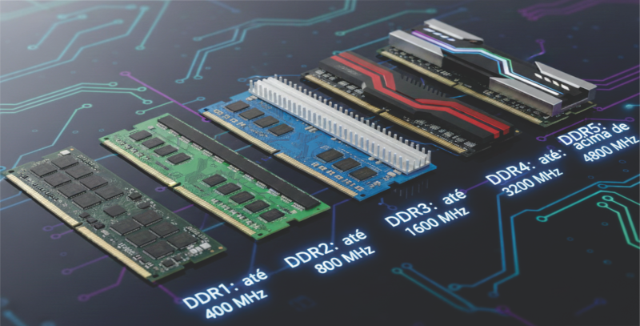
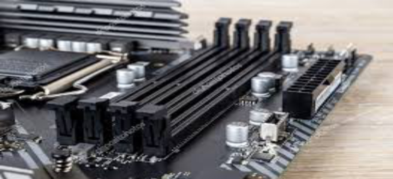
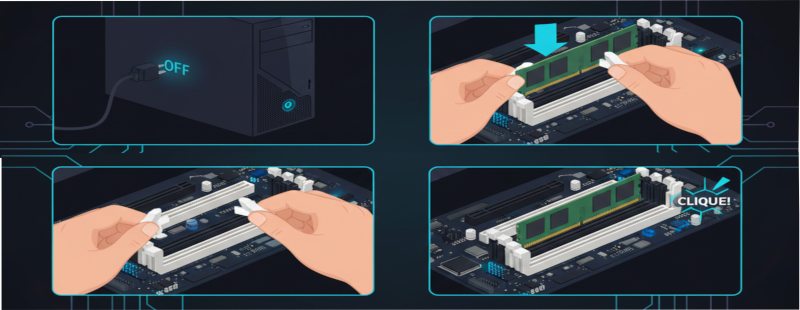
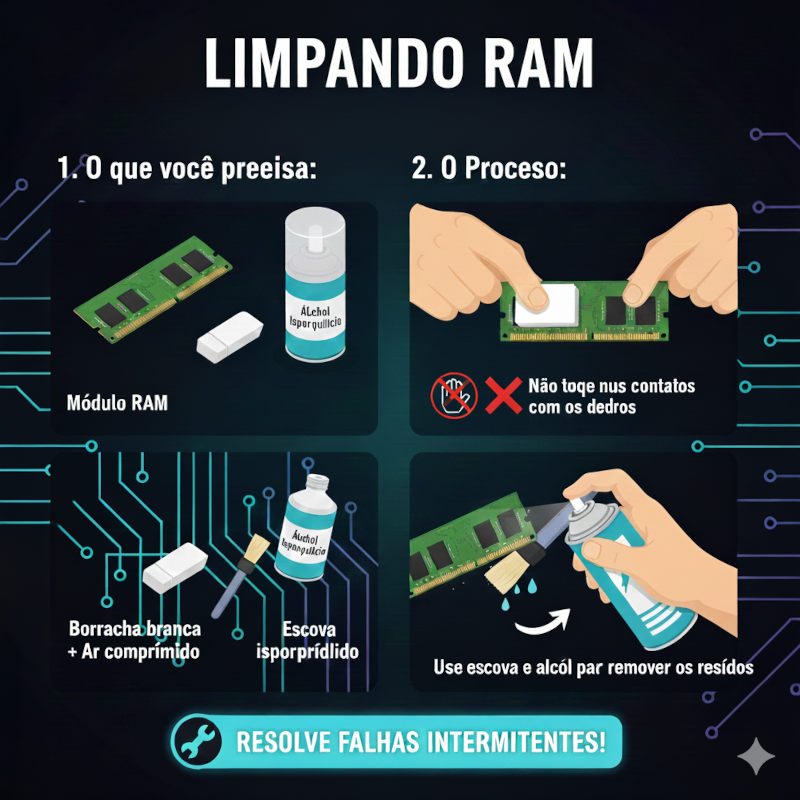
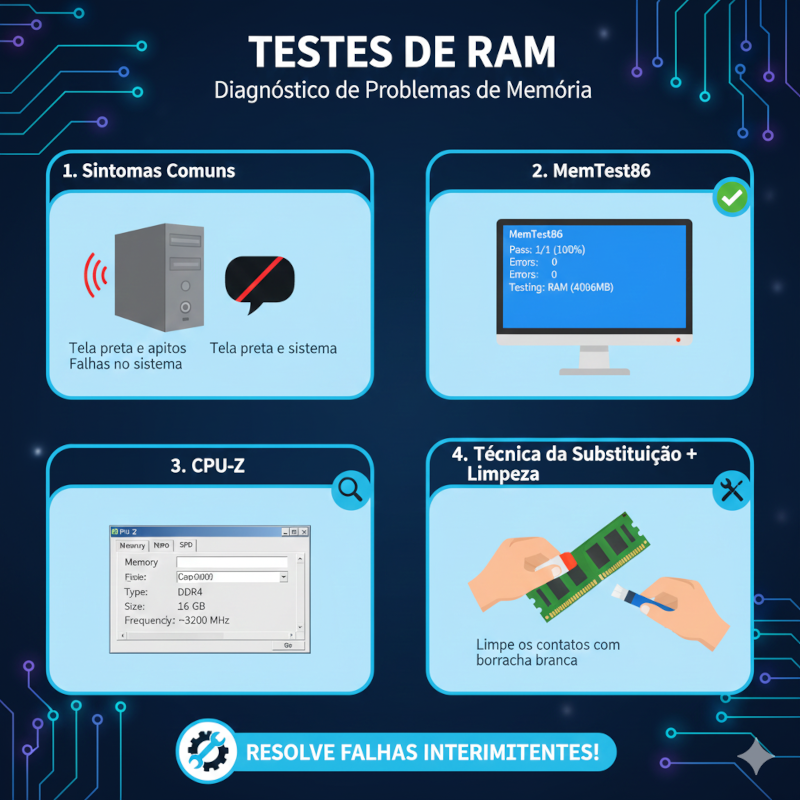

O que é a memória RAM?
A memória RAM é responsável por guardar dados temporários usados pelo sistema enquanto o computador está
ligado.
Instalar corretamente um módulo RAM é fundamental para evitar travamentos, falhas de inicialização e
problemas de desempenho.
1. Identificando o tipo de memória

Existem diferentes tipos de memória: DDR3, DDR4 e DDR5.
Cada uma possui um entalhe em posição diferente — isso impede que seja instalada incorretamente.
💡 DICA: Veja a etiqueta do módulo ou o manual da placa-mãe para identificar o padrão
correto.
2. Encontrando os slots certos na placa-mãe

Os slots de RAM geralmente têm cores diferentes para indicar a função de Dual Channel.
Para ativá-lo, instale dois módulos idênticos nos slots A1 + B1 (cores iguais).
3. Instalando o módulo RAM

- Abra as travas laterais do slot.
- Alinhe o entalhe com o slot (não tem como encaixar errado).
- Pressione com firmeza até ouvir dois cliques.
⚠️ Não force demais. Se não encaixar, provavelmente está no sentido errado.
4. Limpeza e manutenção preventiva

Em computadores antigos, é comum a RAM falhar por má conexão.
Use uma borracha branca para limpar os contatos dourados.
Use álcool isopropílico para limpeza completa se necessário.
5. Testando após instalar

- BIOS/UEFI: verifique se o total de memória foi reconhecido.
- CPU-Z: veja frequência e tipo da memória.
- MemTest86: teste completo para encontrar erros.
🔧 PCs que não dão vídeo podem estar com RAM mal encaixada.
Erros comuns na instalação
❌ Instalar no slot errado (não ativa dual channel)
❌ RAM mal encaixada (PC liga sem vídeo)
❌ Misturar DDR diferentes
❌ Forçar o módulo no sentido errado
❌ Não limpar contatos em máquinas antigas